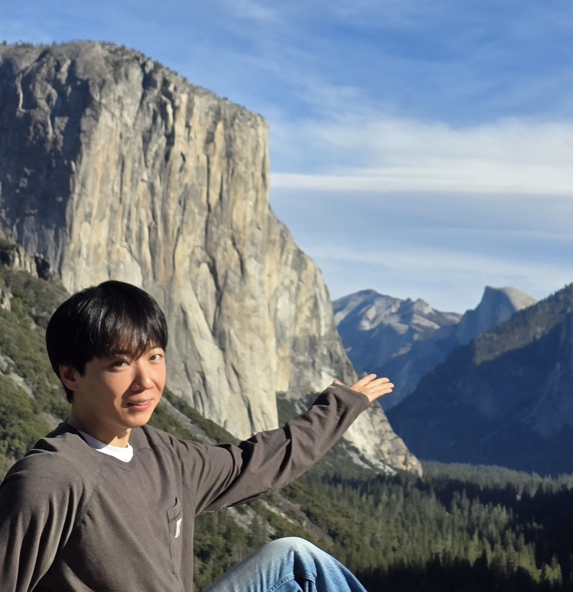

I am a postdoctoral researcher studying synthetic cells, complex coacervates, polymersomes, lipid nanoparticles, and microfluidic systems for biomaterials and biomedical applications. I currently work with Prof. Matthew J. Webber at the University of Notre Dame.
My research focuses on constructing biomimetic systems that connect soft matter, supramolecular assembly, and microfluidic engineering. I am interested in how compartmentalized materials such as coacervates, vesicles, and nanoparticles can be designed as synthetic cell-like platforms and therapeutic materials.